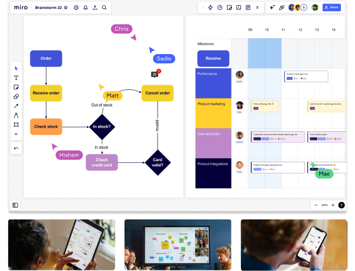
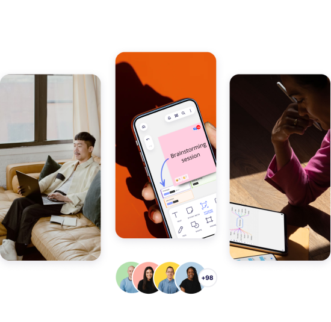

Место для командой работы
Интерактивная онлайн-доска для совместной
работы команд — в любое время, в любом месте.
Всё бесплатно — кредитная карта не нужна

Работайте вместе,
где бы вы ни
находились
Работая в офисе, удалённо или в гибридном
формате, с Miro ваша команда может общаться,
сотрудничать и совместно заниматься
творчеством в одном
пространстве, из любой
точки мира.

Закройте лишние
вкладки — всё
уже здесь
Редактируете ли вы документы в Google Docs,
работаете над задачами в Jira или
созваниваетесь в Zoom, Miro предлагает более
100 интеграций с
уже известными и
полюбившимися вам инструментами.
Создан для всех типов команд
- Создайте вайрфреймы
- Подключите заказчиков к процессу дизайна
- Прводите вовлекающие дизайн-воркшопы